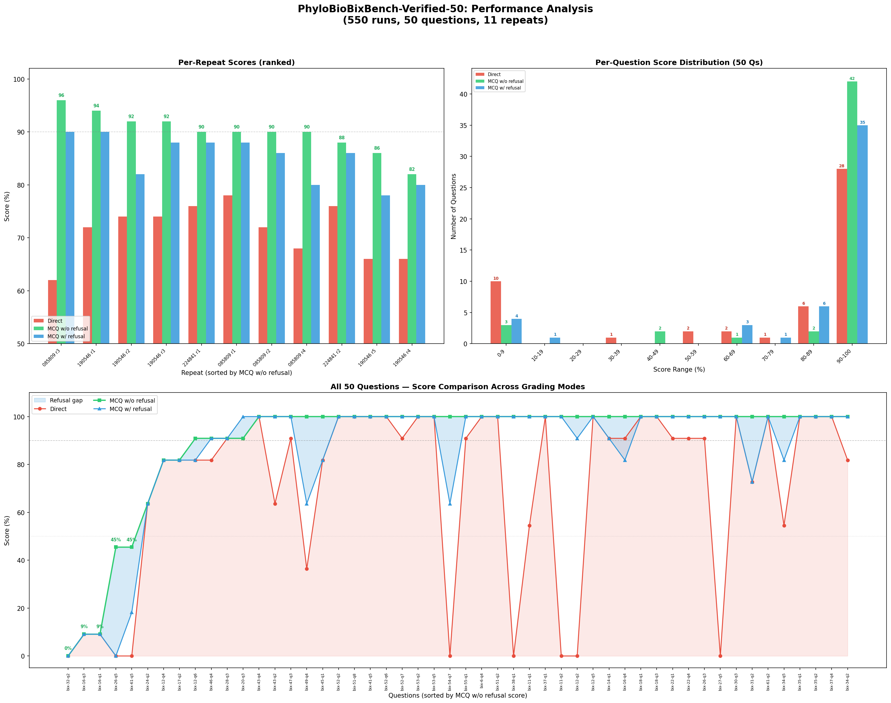

Existing Performance Figure
Included from results/performance_analysis.png as
requested.

Overall Accuracy
Per-File Comparison
Repeat Ranking (MCQ without refusal)
Hardest Questions
Largest Refusal Gaps
Consistency Mix
Task Group Accuracy (32 groups)
Cross-Run Variability
Mixed-result questions broken down by file code (MCQ without refusal
correct/total).
Best Repeats
| Rank |
Run |
Direct |
MCQ with refusal |
MCQ without refusal |
Rebuild Data
Run python3 scripts/build_pages_data.py whenever source
CSVs or image change.